よい子の皆さんこんばんは！！レアにゃんだよ！
高確率でいきなり妙な物をプレイし出す自分としては珍しく
この頃話題のゲームであるファイアーエムブレムifをやり込んでました！！
「ファイアーエムブレムif」 とは一体どんなゲームなのか！？
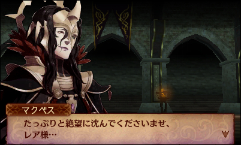
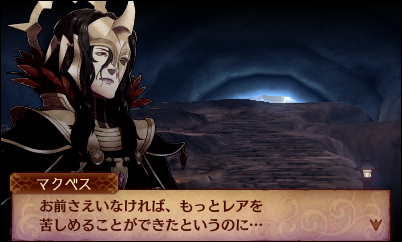
こういうゲームです！！
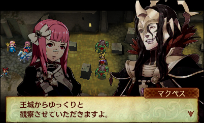
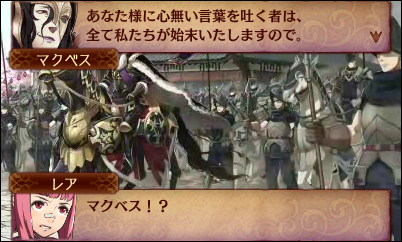
こういうゲームです！！！
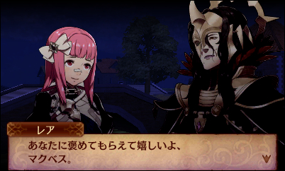
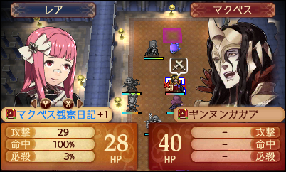
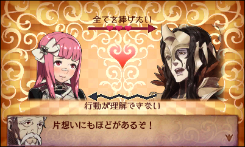
こういうゲームです！！！！！！
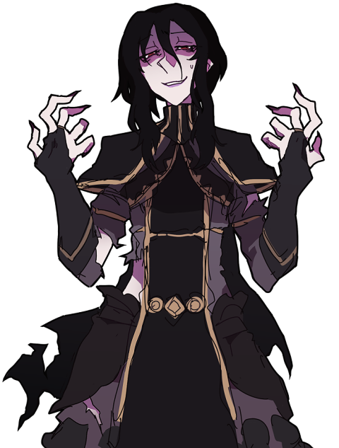
Yes, this is a pen.
はい、レアちゃんはマクベス様に死ぬほど惚れ込んでいます。
SSは最後の一枚だけコラです。本当にありがとうございました。
FEシリーズ、と言うと個人的にずっと硬派なストラテジーのイメージがありまして、
今までプレイした事が無かったので今回も特に自発的に内容を知る機会は無かったのですが
ある時からツイッターでお馴染みのフォロワーさんが何かのゲームを始めたらしく
「戦いの合間に旦那を撫で回している」 「旦那とお風呂に入ってきた」 等と絶賛していたので
一体何をやってらっしゃるんだ･･･と気になりすぎて見に行ってみたところ、なんとこれでした。
しかもあろう事か撫で回されていた対象は主人公狂の長髪敬語の執事であった。
本当にありがとうございました。
･･･というわけで、今回はFEifのプレイ感想なのですが
未プレイの方がここで終了というのも何なのでまともにゲーム内容の紹介も入れてみました(◜▿~ )
ざっくりめですが少しでも雰囲気が伝わりましたら嬉しいです！
感想の方は書きたいだけ書いていたら長さが若干悲惨な事になってしまった為
気になった部分だけ読み飛ばしていくスタイルがおすすめかもしれません！いつもだけど！！
一応、記事を書くきっかけになった本題はマクベス軍師が仲間になるかもしれないという話なので
その辺りだけでももし興味を持った方がいらっしゃいましたら下の方までガッとスクロールしてどうぞ。
この先 暗夜･白夜 のネタバレが多分に含まれています
のでこれからプレイ予定の方はお気を付け下さいませ･･･！！
透魔に関してははまだ手を付けてないので何もないよー！
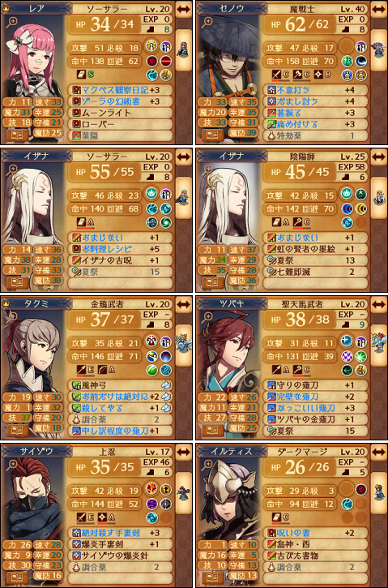
とりあえず我が白夜軍のクリア後現在の状況です＼( 'ヮ')／
暗夜→白夜 の順番でプレイしたため
こちらの方が暗夜よりも色々と拘っている結果になりました
見ての通りうちのエースはセノウさんです！！にゃんにゃんの趣味です！！！！！
困った時はとりあえずセノウさんに任せておけば瞬時に片付けてくれます！！
声がとってもかっこいいです！魔戦士が誰よりもよく似合います！！つらい！！！
ちょっとセノウさんについて小一時間語り上げたい気持ちでいっぱいなんですが
彼については記事の下の方で捕獲の経緯込みで詳しく書いているので是非(◜◡◝)
我が軍ではセノウさんがジョーカーとスズカゼに次ぐ立派な第三の側近です。
むしろセノウさんがナンバーワンだ（おわれ）
次点でイザナちゃんがうちの元祖なぎ倒してくれる要員ですね（魔符は暗夜からの引き継ぎ）
セノウさんもイザナちゃんも人様のお城で見かける事がまず無いのでスキル取得に割と苦労してたり
ネットを探してみればスキルキャッスルとか公開されてそうなものですけどどうなんでしょう･･･
主人公以外に支援の無いイザナちゃんがソーサラーを出来ているのは旦那様だからなのですが
これは好きな人が大体結婚出来ない故の悲劇であってレアちゃん内における優先順位はあくまで
マクベス様＞＞＞＞＞永遠の壁＞＞＞セノウさん≧ゾーラちゃん＞＞イザナちゃん＞他
であるという事実は忘れないで頂きたい。
愛の腕輪とか欲しいじゃないですかやだー！
勿論わざわざイザナちゃんを選んでいるのは有支援内では最も気に入りだからなのですけど
ちなみに「お料理レシピ+5」の中身はライナロックです。
繰り返しますがこちら白夜軍です。
うちの武器屋は白夜武器屋です。
割ともうやりたくないです！！！！(◜人◝)
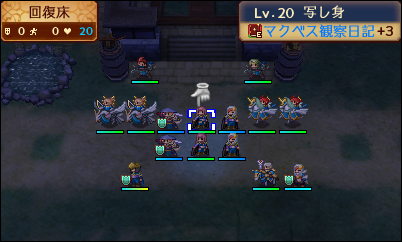
写し身軍団すぎてさながらミュウツーの逆襲状態だよ
シナリオの話です。
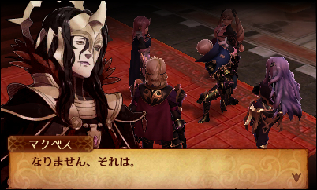
マクベス様が好きです
好きすぎてどこから喋ったらいいか分かりません(◜人◝)
最初に見かけたのは実はゲーム内ではなく攻略本のキャラ紹介だったような気がするんですが
思えばあの頃からページをめくる度何とも言えない気持ちになりながら無言で四度見してました。
ゲーム内で最初に登場した時は 「あ、嫌味な人だ」 と思ったものです。
むしろそれ以外の感想を持った人がこの世に存在するのか怪しいレベルです。
ところが登場二度目辺りから
「嫌味な人だ･･･本当に嫌味な人だ････」
という事実に気付き始めました
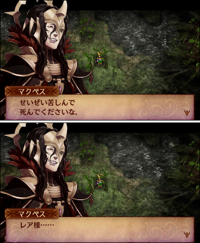
嫌味、というか、
なんというか、
結論から言うと
この人最初から最後までレアちゃん潰す事しか喋ってないんですよね
しかも、どう見ても
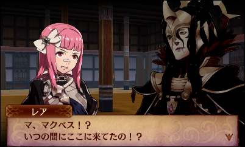
シナリオを通して、ずっと
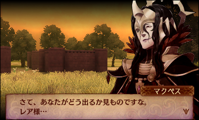
著しくストーキングしていますよね
暗夜やってる間ずっと思ってたんですが
この人レアちゃん追いかけて潰す以外に仕事無いのかな！！？と
でまあ今更言うまでも無いんですが陰湿です･･･
ほんとあの･･･嫌味だし性格悪いし･････
あの･･････好きです･････････
召されそう（白目）
レアちゃんの事分かってるかこのブログ見た事ある人なら察しまくってると思いますけど
具体的に言うとマクベス軍師の長い髪が好きです･･･中性的な所が好きです･･･
目付きが好きです･･･ゲス顔のプロなとこが好きです･･･喋り方が好きです 声が好きです
異常に血色悪い所が好きです 執着的な所が好きです 嫌味な所が好きです
性格悪い所が好きです 性格悪い所が好きです
酷いことする所がとっても好きです
マクベス軍師の台詞の中でもレアちゃんが
ぶっちぎり最高に好きなのがこれです
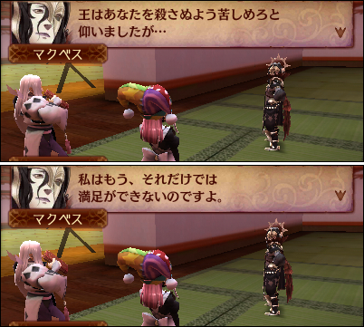
これを聞いて頭とろっとろになりながらふっと思ったんですが
甚振ってくれたら嬉しい好みのキャラとか甚振ってくれそうな好みのキャラはいくらでもいても
実際にゲーム内で、公式に？レアちゃんに執着して殺しにかかってきた人って
実はマクベスと一人いるかいないかくらいだという事実に気付いてしまったわけですよ
やっぱり違うなあと、いいなあと
この辺でドン引かれていそうですが
とりあえずレアちゃんがマクベス様好きなのはそういう感じのあれです！！！(◜人◝)
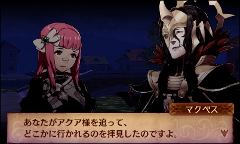
この辺ほんとやばいですね
「眠れないな」 って呟いてた時の話のはずなので随分時間は遅かったんですよ
しかもアクアを見付けたのは眠れずに森の外れの辺りをふらふらしてた途中の話で
元々彼女を追って出ていたわけじゃないのでアクアと合流したのを見てるって事は
少なくとも眠れないの辺りで既にどこかから何故か見てた事になるんじゃないですかね
そんなことしなくても両ルートで幻影使って四六時中レアちゃんの目の前に綺麗に現れてる辺り
どうやら何処にいても居場所と様子が確認されているみたいですけど
もはやタクミ先生に文書書かせる意味はあったんですかね･･･
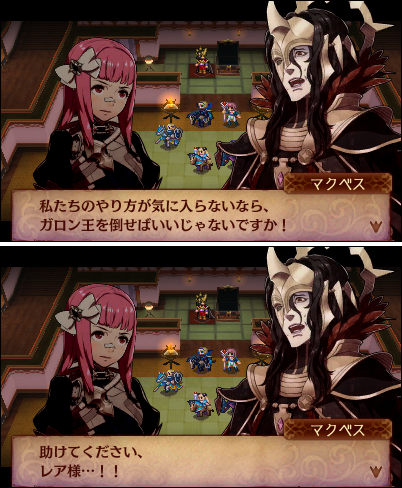
忠誠心の塊じゃなかった！！
私利私欲で動いてて都合の良い側にころころ寝返る方のタイプだった！
ここで助けたら普通に仲間になってたんじゃないでしょうか･･･一応は･･･
ずっと反乱の機会伺ってそうでいつか寝返りフラグ折れたとしても相当時間かかりそうですけど
果てしなく胡散くさい笑顔で
それから両ルートでガロン軍に対して何かに付けて卑怯者扱いしたがるレオンについて
「卑怯者は我が軍には要らない」 「負けたなら潔く死ね」 という旨の発言を繰り返してますけど
実際彼が追い詰められてその気になれば逃げられる状況に陥ったら果たして潔く殺されるんでしょうか
しかも白夜側では森で闇沼とノスフェラトゥという素晴らしく卑怯なコンボを他でもないレオン自身が
何の躊躇いも無く使ってきたりしていたので個人的にちょっともやもやする所ではあります･･･
もし上の事をマークス兄貴が言ってたならばかなり説得力が生まれていたと思うのですけど
気に入らない者に対して冷酷だったりやや詰めが甘い所？もレオンの魅力の一部という事でしょうか
暗夜のエンディングロールでは 「進んで嫌われ役を引き受けたため当時の人々からの評価は低かったが
恩恵を受けた後代の人々からの評価は非常に高い」 的な記述があったのでそういうキャラなのでしょう
勿論ガロン軍も客観的に見ればあの場で生かしておくにはリスクが高すぎるのは事実なので、
彼のようにばっさり斬り捨てられる人物がいなければ最悪の事態になっていたかもしれません
複雑なところですね（マクベス信者並感）
個人的暗夜ルート全体の感想は
「ガロンに延々と死の舞台へのおつかい命じられて
マクベスに嫌味言われてるうちになんか終わってた」
でした。あとなんか溶けてた。理由不明。
白夜の方が記憶に新しいのであんまり覚えてないっていうのもあるんですが
大きくは間違ってないよね！？
初回プレイだったのと、マクベスが好きすぎてちょっと登場するだけで有頂天だったので
自分の場合は暗夜を進めていく上で実際ストレスはそれほど感じなかったのですけど
ガロンの真実の姿を見せる為とはいえ、途方も無い人数の罪の無い人々が無慈悲に殺されていくのを
最後まで黙って見過ごしていたのは主人公の性格的にはどうだったんだという部分がありますね･･･
逆らえない理由がもっとはっきりしていて、主人公の方も多数の犠牲はやむまいと認識した上で
打倒ガロンを目論むしっかりした信念を持っているならまだ爽快感があって良かったかと思うんですが
終始「こんなのって･･･あんまりだよ･･･！」（でも何もしない）だったのでぐだぐだ展開というか
こんな事なら王座まで大人しく持って行こうとせずどうにか結束して反乱起こしてた方が
大量の白夜兵もリョウマお兄ちゃんも死なずに済んだんじゃね･･･と思うところはあるのですが
あくまで「もし王道主人公がやむなく悪の道を選んでいたらどうなっていたか」という意味では
こうなるのが順当なのは分かる気もしますしでもまあ理不尽だったよなー！って事です！！
そういうわけで暗夜をクリアして白夜に入った時は平和な世界の有難みが身に染みたものです
ガロンのおつかいが無い･･･！周囲からの圧力が無い･･･！なんという事でしょう！！
白夜冒頭で主人公がマークスに対して
「お父様は私を殺そうとしたし、酷い事をしてる暗夜軍に付く事は出来ないよ！」
って至極当たり前の事を言っている場面で何故か早々に感動してしまいました。
暗夜で俺達は一体何をやっていたのだ。
難易度は一周目の暗夜でカジュアルノーマル、白夜の方はクラシックハードを選択。
プロローグだけやたら難しくルート分かれしてからは魔符無双で終章手前まで楽勝だったので
魔符と写し身フル活用で行くならルナティック選んでも良かったかもしれません_( _`ω、)_
暗夜の方も黄泉の階段とか面白かったのでそのうちハードで攻略してみたいです！
白夜でマクベス様と敵対してから改めて暗夜側に付いたらｱｱｱｧｧｱｱｱｯ!!!!!!!（発狂）ってなれそうなので
どっちみちシナリオやり直したいというのがあるんですけども！！
･･･と、若干逸れましたがここからは白夜の話です。
白夜シナリオで個人的に最も衝撃的だったのは、何と言っても
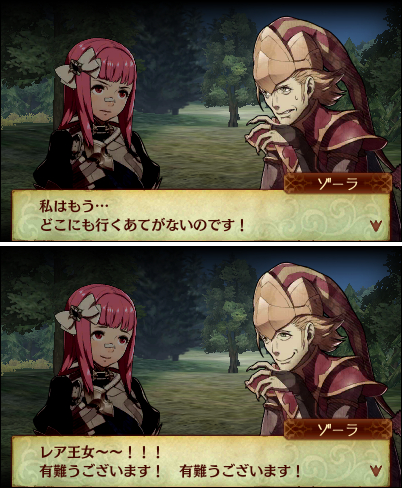
ゾーラちゃんですよ････････････････
元々ゾーラに対しては喋り方がいいなぁくらいに思っていて
特に注目してるわけでもなかったんですがここに来てまさかまさかの仲間に加える流れ。
流石にちょっとテンション上がりつつ、城で確認してみても当然自軍扱いにはなってなかったので
どうせすぐ裏切られるやつなんだろ！
「敵を迂闊に信じてしまった！甘ちゃんだった！！」
っていう王道シナリオ特有のやつなんだろ！
と先読みしてしまい
いつ退場になるかな～くらいの気持ちで見ていたのですが･･･が･･･
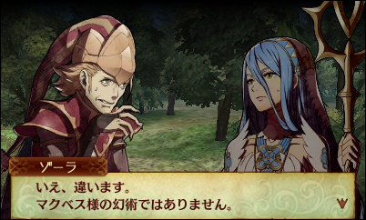
ちょっと余談ですが、ゾーラちゃんにはマクベスの幻術の見分けが付くのですね！
ガロン王ですら観客席から見ていた段階ではどうやらララの正体を見破れていなかった様子を見るに
ゾーラの幻術は見た目の完成度が相当高いはずですが、マクベスの幻術の腕前は
更に上を行っているはず（詳しくは後述）なのでその見分けが付くのは流石と言ったところです
専門分野だからなのか、もしかして同僚にしか分からないような癖があったりするのでしょうか
そしてやってくる決定的シーン
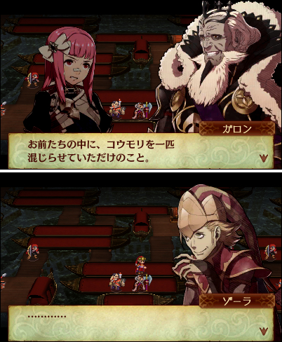
ですよねー。
FEifゾーラキングダムはここまでだったのだ･･･
ところが何やら本人の様子がおかしい。
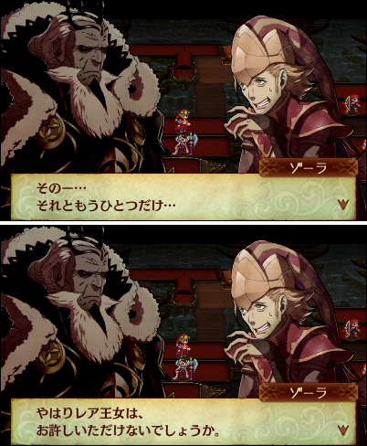
えっ･･･
えっ？
え･･･えっ･････
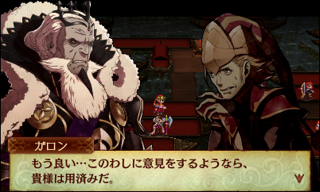
ちょ････ちょっとまって･･･まっ･･･
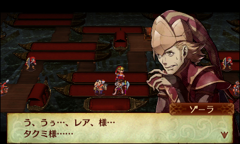
あ･･･あああぁあ････！！
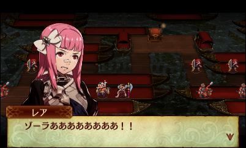
(；ﾞﾟ'ωﾟ'):ｱｱｧｱｱｱｱｱｱﾞｰｰｰｰ!!!!!!!
まじかよ･･･････････････
レアちゃん (@Leasaaan) 2015, 8月 19
やべえ ガロン王クソすぎる
貴様はたった今（この部屋の中の）全世界を敵に回した
レアちゃん (@Leasaaan) 2015, 8月 19
レアは激怒した。
必ず、かの邪智暴虐のガロン王を除かなければならぬと決意した。
レアにはシナリオの長さがわからぬ。レアは、効率そっちのけのガチエンジョイ勢である。
自軍に色つきメガネを押し付け、「愛がありますね！」をポチりながら暮らして来た。
けれどもフラグクラッシュに対しては、人一倍に敏感であった。
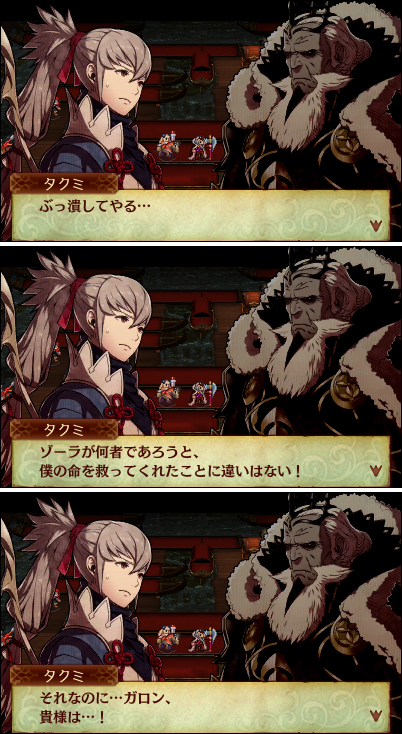
タクミ･･･よくぞ言ってくれた･･･！！！
果たしてタクミちゃんがここまで輝いて見えた事があっただろうか！！
退場するのは分かっていたにしても、こんな事ならいっそ潔く裏切ってくれた方が後味良かった･･･
とショックを受けつつ予想外のフラグを立てていったゾーラの株は唐突に爆上がりしてしまい
終章へ向けて敵討ちに燃え出すレア軍メンバー達
打倒ガロンへの第一歩が、今始まる！！
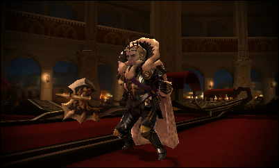
･･･と思いきや、その章のマップに思いっきりガロンいたよね。
(;;`˘-˘´) ええええ～～････？？
どうも勝ち目の無い前提で敵兵が配置されまくっているタイプのマップらしく
戦う事はせずに上部の突破マスへ直行して瞬速クリア推奨との事
一体ガロンがどれほどの力を持っているのかは分からない。
もしかして絶対に倒せないようになっている可能性も大いにある。
しかしレア少女はここで 「戻る」 を押すと無言で竜の門へと向かう
無論、打倒ガロンへの資金調達の為である
みんな大好き！おかまちゃんブラザーズ！！
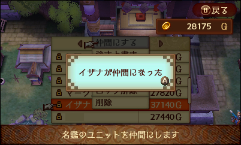
手に入れた7万Gを使い、暗夜クリア時に魔符登録していたエースのイザナちゃんを召喚
イザナちゃんは武器レベルが高いので最初からライナロックをぶっ放せるものの
12章の段階ではまだ城の設備が整っておらず、上位装備が調達出来ないので通信訪問の出番です
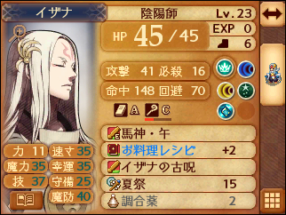
早速色々整えてこんな感じ。
うちのイザナちゃんのメインウェポンはお料理レシピことライナロックなのですが
レシピは自能力低下付きの為、連発させているとえらい事になってしまうので
基本的には防御強化で実は充分強かったりもする馬神の方を使わせています_( _`ω、)_
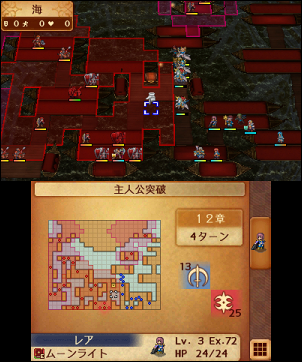
この段階でぶち込まれたイザナちゃんは相当強く、先陣を切らせるだけで敵をなぎ倒す程だったので
どうやらガロン戦までイザナちゃん一人に任せるのが手っ取り早かったっぽいんですが
その事に気付いたのは数章後だったのでこの時はかなりまともに（？）戦ってました！！！
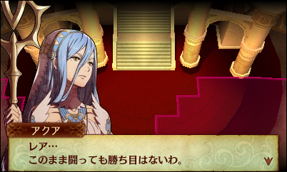
ちなみにこの章でガチ戦闘を続けようとするとアクア先生からこんな事を言われたりします
それでも俺達は･･･俺達には使命があるんだ･･･（真顔）
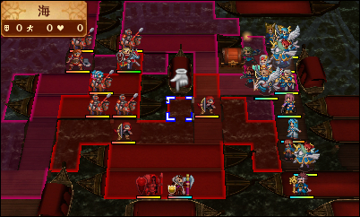
謎の大決戦
次の章から魔符無双で脅威のゆるゲーと化してしまった事もあり
白夜でこれほどの接戦が見られたのは後にも先にもここだけでした。
一体何故序盤でこんな事になってしまったんだ！ゾーラちゃんへの執念の結果がこれだよ！！
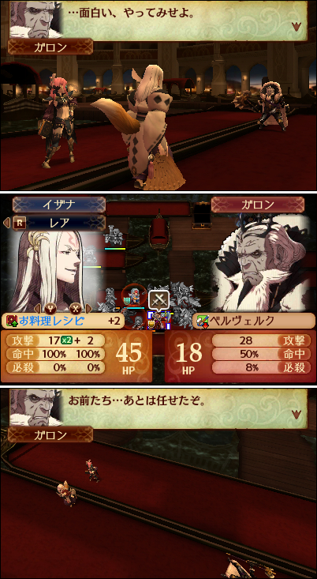
∩(⌒∇⌒)∩ ﾔｯﾀ～～～～！！
ゾーラちゃあああん！！
ゾーラちゃんの仇は取ったよおおおお！！！！！
ガロン王生きてますけどね！！！
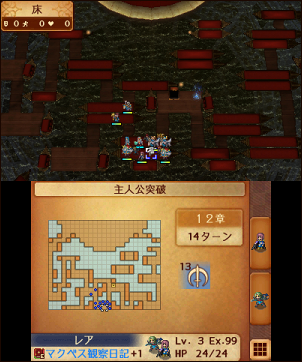
捨て台詞で 「お前たち･･･あとは任せたぞ」 とか言ってますがもう他に誰もいません！！
おじいちゃんしっかりして！むしろ他の兵より先にガロンを倒す事の方が遙かに難しいのでは･･･
という事で、白夜12章のガロン王は頑張れば倒せます！！
ただしこの地点で元々さいつよであったレアちゃんでも10分の1もダメージが与えられず反撃で即死、
イザナちゃんでアクアに歌わせて何とかギリギリでそれ以外は全く歯が立たない状態だったので
サポーターや水路を使わずにクラシックで攻略となると真っ向勝負は相当厳しいかもしれません
道中では七難即滅2本使いましたがそれでも一度殺されかけたのでやり応えは抜群です･･･＼(^o^)／
なお、ここでガロン王を倒しても特に報酬等のメリットやシナリオ上の変更点は無さそうです。
戦闘時の会話が聞けるくらいとちょっとした優越感ですね！
ところで白夜9章の色んな意味でよろしい展開だったイザナちゃんの初登場シーン、
自分の中で 「エロゲかな？」 と評判になりつつも中身はゾーラという複雑な気持ちがあったのですが
この件以来普通にゾーラちゃんを気に入ってしまったので逆にミラクルな場面に見えてきました。
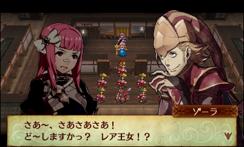
ちょっと言い表し難いつらさですね････････････
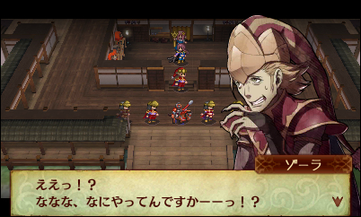
ゾーラちゃんのこの辺のオーバーリアクションが特に好きです！！！
マクベス軍師と揃ってボイスが楽しい二人組ですね（めっちゃ褒めてる）
事ある毎におどおどしながら「あのぉ～～･･･」って声かけられたい人生だった
それからゾーラちゃんの落としていったエクスカリバーアウルゲルミル枠の武器何だったかなと思って
調べてみたらまさかのフィンブル（しかも落ちない）で一通り笑ってその後悲しみに包まれたので
普通のフィンブル錬成してゾーラの幻術書って銘刻んでレアちゃんが使ってるんですけど
透魔で固有ドロップ持って登場してくれませんかね･･･ないかなー･･･
ぼくはパルレでなでなでしたら顔真っ赤にして 「レレレレレレア様～～～～！？」（ﾋｴｪｴｴ～～）
みたいな反応するゾーラちゃんが見たいんですよ･････････わかって･･･････
で、ここら辺でやっと捕獲の話なのですよ～～！！
敵を捕まえて仲間に出来る、というのはどこのゲームに行っても
底知れぬロマンの溢れる素敵システムだと敵大好きマンである自分は思っているのですが
いかんせんifの捕獲機能ってちょーっとばかり人々に普及してないような気がするんですよね。
だって人様のお城で牢屋訪問すると必ず全部空じゃないですかー！やだー！！(；ﾞﾟ'ωﾟ'):
確かに戦略重視であれば別にわざわざ捕獲して使う理由は無さそうですが
ifのもぶ兵にはイケメンさんもちらほらいるのでもうちょっと広まってもいいかと思うのです･･･
ただ自分自身、捕獲機能を使ってみて残念に思った部分はいくつかあったりするので
ステキ面と合わせてざっくり書いていきますヾ(:Dﾉｼヾ)ﾉｼ
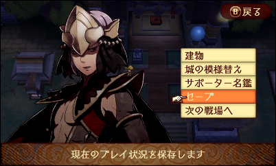
ダークマージ様です。
諸君、私はダークマージが好きです。
暗夜クリア後にまさかの執事として選べるようになってた時はマジで発狂しかけたので
執事変更機能にもぶ兵加えて下さった話分かりすぎてる開発者の方には足を向けて寝られません。
メインキャラ使った時のようなボイスは無いもののこの見た目でやっぱり 「仰せの通りに」
とか言ってるのかと思うと非常につらいです。夢がいっぱい詰まってますね。
そういうわけなので捕まえるならまずダークマージ！と決めていました！！
いやぶっちゃけ言ってしまうと妖狐が同じくらいかその上を行く程好きなんですが
あちらは白夜暗夜で捕獲不可だったので残念ながら保留中です(;`˘-˘´) 透魔に期待だ！
あまりシナリオが進むと下級職を見かけなくなってしまいそうなので、キリのいい所で探していると
丁度白夜16章にダークマージがわんさかいました。マクベス様のいらっしゃる例の宮殿です。
要はマクベス軍のダークマージです。直属の部下ってやつです。羨ま････ではなく、
仲間にしてマクベス様から特別に兵を分けて頂いた事にすれば夢が広がるどころか大爆発なのでは･･･
という謎理論に辿り着いたのでガッツポーズしながら早速オロチさんに向かってもらいました
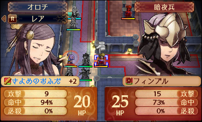
･･････。
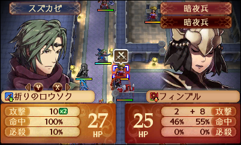
作戦変更。
オロチ先生がトドメを刺せるように先に削ってもらおうとするも、他の人だと倒し切ってしまうので
比較的育ってなかった（ほぼ後衛に回ってた影響）スズカゼに叩いてもらう事に(´・_・`)
オロチ先生は暫く外れてからのいきなり参戦だったからしょうがないね！
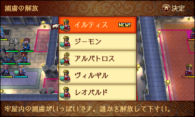
全弾成功という予想以上の快挙･･･！
という感じで、捕獲要員が育っているのに越した事はないですがそうでない場合は
なるべくターゲット以外をおびき寄せて片付けおいてから戦いに向かない武器で先に削ってもらい、
戦闘指揮や応援でサポートしてもらいながら捕獲要員でトドメを刺すと良い感じです
向こうから攻撃されてしまうと反撃でミンチになる事が多いため自ターン内で一気に済ますのが吉
捕獲自体の命中が低めなので、捕獲時周りを味方で固めておくと命中補正で上手く入っておすすめです
3か所に味方を配置してからその中心マスに捕獲要員が入って捕獲する感じですね！大がかりだな！！
ターゲットが増援で出るマップだと待ち伏せも名前厳選もしやすいので向いてるかもしれません
実はわざわざ七難駆使してマクベス様の隣にいるダークマージ捕まえたんですが
名前的に上のイルティスの方が好みだったので結局彼を採用する事になりました(◜◡◝)
捕獲した敵兵は、ご存知牢屋で説得かスカウトする事で永久的に仲間に出来ます。
おいでませイルティス大先生！アクセサリーも着けられるよやったね！！
としばらくは良かったんですが、そのうち大きな問題が。
下級兵を捕獲で仲間にした場合
・ 支援は無い （当たり前ですが）
・ 戦闘時のボイスは無い
・ マスタープルフと各特殊職プルフが使用可能
・ 転職させた場合、イラストは元のまま
これです。
最後の一つ、素晴らしいです。マジでよく分かっていらっしゃる。
つまりダークマージを捕まえてソーサラーに転職させても、イラストはマージのままです。
ところが問題はここからでして
・ 転職させた場合、モデルは転職後のものに変わる
一見当たり前にように思えるこれの何がまずいのかというと
そもそももぶ兵のモデルは残念な事に性別ごとに全職顔が同一と思われ、
もぶ兵を戦闘時にアップで見るとイラストと雰囲気が別人のように見えたりするのはその為です。
そこはまあしょうがないような気もしなくはないのですが、このもぶ兵を転職させた場合
服だけでなく髪型･髪色まで一緒に転職後のものに変わってしまいます。
つまり服も顔も髪型も完全に別人になってしまうわけです･･･(;`˘-˘´)
最初はイラストで妥協しようかと思ったんですが、戦闘に入るとあまりにもただのソーサラーなので
これじゃわざわざダークマージ捕まえた感が薄いよなぁ･･･と思いスキルだけ取ろうと考えたものの
・ 一度上級職になると下級職には戻れない
そうね。そうだね。すっかり忘れていたね。
ええいもうこの際ダークマージのスキルだけでいいからずっとマージ一本道でやっていこう！！
これでぼくのさいきょうの見た目も中身も純正なダークマージ様が出来るぞ！やったー！！
・ 下級職にはエターナルプルフが使えない
完全死亡＼(^o^)／
開発さん･･･下級職は･･･下級兵もぶは救われないのでしょうか･･･（白目）
まあ捕まえられるだけでも有難すぎるシステムではありますし好きな事には変わりないので
我が城ではイルティス先生は今日も執事とマイチームを現役担当しています(◜▿~ ) Lv20でな！！！
せめて元々割合の高い銀髪とかであれば違和感出にくかったかもしれないんですが、薄紫ですからね･･･
しかも彼の場合は顔の別人具合が装飾の布で隠れて分かりにくくなっている部分が大きいので
露出するとなおの事誰？状態になってしまうという悲劇
下級妖狐ももし透魔で捕まえられたとしてもどうすんですかこれ･･･
妖狐のあのかおがぼく死ぬほどすきなんですけど そもそもかおが違（完）
ただもしかすると下級職のままLv20越させる方法に一つだけ心当たりがあるかもしれないので
検証してみてもし出来そうであれば次の機会に書き残しておくかもしれません
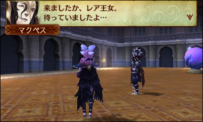
ここだけ見るとすごく密会っぽくないですか
仲間が戦っている間にこっそり一人抜けてマクベス軍師の元に先回りする白夜王女
表向き捕獲と見せかけて仲間にしたダークマージは実は伝達係の内通者だったとかどうのこうの
コウモリはレアちゃんだったのだ
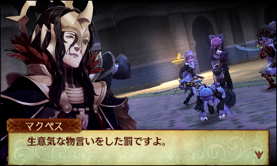
これを見たドMは ｱｱｧｱｱｱｱﾞｰｰ!!!! フローラどちくしょうが！！ となったものですが
結局これもレアちゃん貶める為の演技だったとか流石マクベス大先生ははんぱないですね
しかしリアリティを出すため（ゲス顔）に絶対通常火力で叩き込んでましたよねこれ
やっぱりちょっと許し難いような気もしてきますね
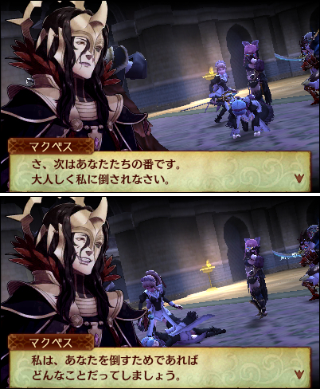
マクベス様～～～！！素晴らしいご慈悲！！
ありがとうございます！！ありがとうございます！！！
どんなことだっていっぱいしてほしい！！！！！！（うずくまりながら）
無事16章も終わって色々していたところで、レアちゃんはとある事実に気付きました。
サポーター名鑑に、先程仲間にしたイルティスが記録されているという事です
へえ･･･捕獲した敵兵を仲間にすると魔符化しなくても自動的に登録されるのか･･･
なるほどなるほど･･･ん？ 名鑑登録されるという事はつまり他データからでも呼び出せる？
( ﾟдﾟ )
なんということでしょう。
レアちゃんには白夜で捕獲不能なために泣く泣く諦めていた人がいたのです。
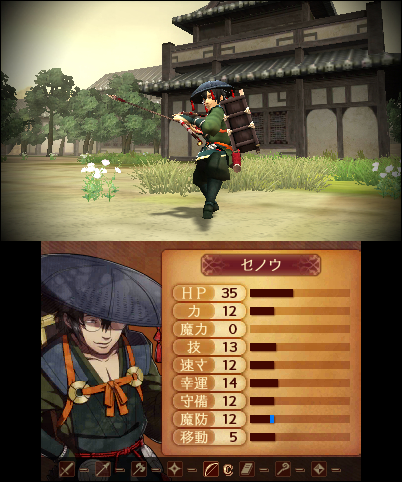
セノウさんです。
諸君、私はセノウさんが･･･
いや、ちょっと待って下さい。
なんとなくですがぼくこれを読んでる方々の6割はセノウさん知らないような予感がしています、
何故なら今現在 「if セノウ」 で画像検索するとまさかの本人が一枚しか出ないという悲惨な状態なので
このブログが思いっ切りヒットするようになるといいなという邪な気持ちを込めて簡単に紹介しますと
セノウさんは、オーディンの娘ことオフェリア加入の外伝で一度切りだけ登場する捕獲可のボスです。
レアちゃんは攻略本をぱらっていて彼にピンと来たのでいつか必ず仲間にしたかったのですが
透魔ではイザナちゃんが加入しないとかいう話、気に入った人の多い白夜に定住するならば
当然オーディンが居ないので外伝自体プレイ出来ずセノウさんには会えないと思っていたのです
しかし、捕獲兵の名鑑登録が使えるという事なら
外伝プレイ可能なバージョンで捕獲してから白夜のデータに連れて来る事が出来るのでは？
そこでいくつか問題がありました。
・ 呼び出した際に魔符扱いになってしまわないか
・ ボイスは残るのか
話が非常にややこしくなるのですが、実は名鑑の自動登録に気付いたのは
「この際クリア時の魔符登録でも構わないのでセノウさんを連れてこようと
暗夜をフェニックスでやり直して駆け抜けていた途中」 です。
割と意味が分かりませんがそういう事をやってました！！！！
なので、この段階で名鑑にはついでに捕まえていたボスのハイタカがいたのです。
わざわざクリアで魔符化する必要が無いと分かり、早速試しに白夜から呼び出してみたところ
魔符扱いじゃない！！しかもちゃんと喋る･･･！！！！
なんということでしょう。
要は捕獲した場合と名鑑から呼び出した場合で扱いは全く変わらないのです
同じボスのハイタカで出来てセノウさんで出来ないわけがありません
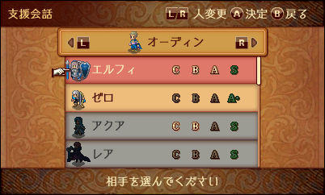
光の速さでオーディンを婚活させていく
なんせ自分が類稀なる二次コンでありながらキャラ同士のカップリングには
全く興味が無いという残念な人間なので、主人公以外を結婚させるのは実はこれが初です。
しかも理由がセノウさん。普通子世代目当てじゃないのかよ。
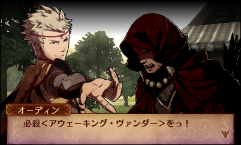
＼( 'ω')／アウェーキング・ヴァンダーッ！！
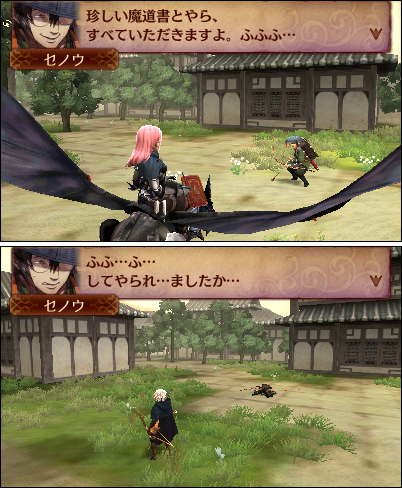
セノウさ～～ん！！！
セノウさんは本編にはおらず、外伝前後の会話にも登場しないので実質台詞はこの二つだけです。
完全に見た目だけで気に入って追いかけてたら敬語ふふふ系だったとかレアちゃんのレーダー何なの？
ドラゴンに乗ってるのは趣味で見下しスキルばら撒きたかったからです。そのうちします。
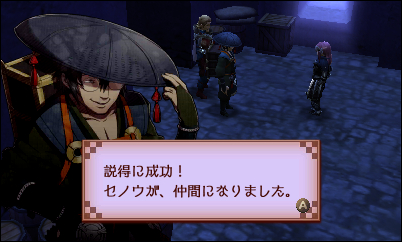
ｳｵｫｫｵｵｵ････!!!!
これで名鑑に登録されたはずなので、白夜のメインデータに戻って呼び直し。
念願のセノウさんが仲間になりました！！！！
上で言った通り、もぶ兵はおそらく汎用ボイスな為仲間にした時にボイスが残らないのですが
ボスは元々用意されていない協力台詞と必殺台詞以外はちゃんと喋ってくれます。
顔も髪型も固有のものとなっており転職しても変わる事がありません。
一度きりの登場とは思えない優遇っぷりだね！！！｡ﾟ(ﾟ⌒∇⌒ﾟ)ﾟ。
ちなみに文章系の台詞が用意されていないので店番等はしてくれないようです、ちょっと残念
絆ユニットも同じ扱いっぽいんですがそちらは触ってないので分からないという
仲間にした敵兵にはサポーターマークが付いていますが、魔符と違い白背景でなく、
特にボスの場合は支援が無い事とMVPにならない事以外はほぼ通常の仲間と同じ仕様です。
捕獲以外の魔符屋購入やキャッスル戦スカウト等で仲間にする事が一切出来ないので、
訪問先で彼らを見かける事があれば100%本人が捕獲して育てたものと見て良さそうです
（今調べたところスキル継承も出来ないのだそうで）
手持ちのプルフでファッションショーさせて遊んでいたところ、
魔戦士が似合いまくる事に気付いたので最終的には魔戦士にするつもりだったんですが
どうも恵まれた事にセノウさんはパラレルで絡繰師が出来るようだったので
先に写し身目当てにししまいでカラコロして頂いてましたヾ(⌒(_'ヮ')_
そしてこれが意外とさまになっていた･･･
セノウさんは元々がモロ白夜方面のコンセプトなので白夜の職業は良く似合いますね
なおぼくはセノウさんのﾆﾀﾘ顔がすんごくとっても好きです。
卑怯者要素をいっぱい詰め込んだ趣味全開銘の武器レパートリー（上の軍SS参照）を揃えてまして
これがまた素晴らしく似合うのでつらいですしいつの間にかイザナちゃん越えてエースになってました
アイテムと武器方面で間違いなくおかねを一番使ってきたのはセノウさんです。
セノウさんの顔見てるととってもぞくぞくしますね
セノウさん･･･セノウさんがifにいてくれてよかった････もうだめだ
こちらがうちでは本職の方の魔戦士なセノウさんです！！
実はセノウさんの頭の笠は固有品らしく、転職しても被ったまま（他の帽子着けさせると外す）なので
想像していたのと違って和風寄りで似合う人少ないな～と思っていた魔戦士がぴったりはまりました。
いや常識的に考えて色合いまで一緒だしちょっと似合いすぎじゃないですかね
デフォルトかよ！！もう魔戦士の代表はセノウさんでいいよ！！(◜人◝)
ちなみにメガネは何やっても外しません。
無いと困るそうです。
ところで牢屋の「説得する」なのですが、
これを選んだ時に相手は上のような普通では見られない表情をするようです
戦闘の劣勢時とは別のぐぬり顔で、本編中等の会話が無いもぶ兵や一部ボスの場合
おそらくはここでしか見られない貴重な表情パターンなので
もし素材でスカウトするなら先にこちらも見ておくと少しお得な気分になれるかもしれません。
もぶ兵の場合はキャッスルで執事になっている時の評価選択でも見られるかも？
暗夜程ではないものの、
白夜の方でもマクベス軍師の幻影ストーキングは健在でした。
幻影だと殴ってもらえない（錯乱）
授かった品物をここぞとばかりに自慢するマクベスの図
白夜軍師とのこの差は一体何なのか･･･
ところで軍師って一応ストラテジストの事のはずなんですが
ユキムラもマクベスも頑なにストラテジストをやろうとしない謎
そう！何度でも何度でも！！！ヾ(⌒(ﾉ'ヮ')ﾉ
でもシナリオ的には目の前に現れてるのは明らかにマクベスの方ですよね。
むしろ主人公の方から話しに行った事一度もないよね。
マクベス軍師にラブレター攻撃をするレアちゃんをご覧下さい
マクベス「い、一体何なのですかこれは･･･」
（観察日記の中身を見ながら）
また一つ新たな迷言が生まれてしまった･･･
世の中のあらゆる言い訳に幅広く使える優秀なテンプレですね
結局白夜でもいつものマクベス軍師のまま助かりませんでしたが、白夜での彼の最後の様子は
一見暗夜の時と似たような事を言ったように見えて少し様子が違っていたと思えてならないのです
上の場面も然り、この発言の直後にさっきの迷言に繋がっているので気付きにくいんですけども
まるで何かを言おうとして引っ込めたような･･･
戦闘時の散り際に 「死にたくない･･･私は、まだ･･･！！」 で終わっている台詞がありますが
この、まだ、というのも生きていたい事とは別の何かを差していたような気がするのです
そもそもガロン三人衆の中で、マクベス軍師だけ何をしたかったのか明らかになってないんですよね
ガンズは一国の王になりたくてゾーラちゃんは出世したいとシナリオの一部で漏らしてましたが
マクベスは暗夜戦闘時に 「あなたを殺してこそ私の策は完成する」 という一言だけを残したままです
本来、命令されてないどころか殺すなと言われている以上主人公に手を下す理由は何も無いのですから
私怨はあるかもしれませんが寄りによってあのタイミングで迂闊な事をしようとするはずがありません
ヒノカの目撃も、直前の会話で怪しんだマクベスが理由付けの為にカマをかけていた可能性があります
策という言葉を使った地点で彼に何らか目論見があった事は確かなわけで、あのタイミングだからこそ
主人公に消えてもらわなければいけない理由が何かあったんじゃないでしょうか
確実に過去に何かあった雰囲気ですね･･･
一見すると三人の中でガロン王に最も忠実であるように見えて
実際はガロン王の事を最も信用していないのがマクベスなのでしょうね
クリア後にタクミ関連の台詞を取り忘れていた事に気付いてやり直してきたんですが
流石に笑ってしまった （射程３）
手も足も出ないｗｗｗ更に命中率の低さから大抵誰投げてもひえぇ･･･って顔しててじわる
なるほどすぎた
暗夜の段階でタクミのあれは謎の兵関連の現象なのかと勝手に思っていたのでちょっとびっくりでした
暗夜側のSSがそれほど残ってないのでただの想像なんですが、今思えばアクアの言っていた
戦争が始まってから白夜の人々が急に攻撃的になった、という状況の発生のきっかけの一部に
内部で何かしらタクミ（を操っていたマクベス）の動きがあったのかもしれませんね
しかし暗夜のタクミ先生はマクベスがご臨終した後も最後まであのままだったんですよね
白夜では洗脳が不完全だった段階で助け出せたが、暗夜では中盤辺りで既に手遅れになっていて
操り元が無くなった後も屍と化したまま動いていた感じでしょうか･･･
タクミはいいとしてもガロン王のあれは一体何だったのかという謎が残ったままですし
あちらの方はガロン王の行動に度々ビビっていたマクベスの仕業とは考えにくいです
この辺は透魔シナリオで確実に判明する（でないと困る）はずなのでそっちに期待ですね
で、マクベス軍師はやっぱり手紙にレアちゃんの行動とか書かせてたんですかね
書かせていなかったわけがない。
度重なるストーキングシミュレーションつらいなサム･････
しかしこの頃レアちゃんは何故か弟パワーに圧倒されて四六時中タクミちゃんを可愛がっていたので
肝心の手紙の内容は 「今日も僕の頭を撫でていた」 みたいな話ばかりになってたと思うんですよね
きっとマクベス軍師は毎朝無言で手紙を握り潰していた事でしょう
マクベスってなんで神台詞の宝庫なの？死ぬの？
人生で言われたい台詞トップ５に間違い無く入る
タクミ先生の証言によると暗夜でレアちゃんがマクベス軍師に洗脳されて毎晩玩具にされてるのに朝になれば全てその記憶を失くしてた話も充分わんちゃんありすぎるのではないでしょうか
レアちゃん (@Leasaaan) 2015, 9月 6
何も言うまい
マクベス軍師のターンが終わってからは
特に目ぼしいもの（？）も無いのでエンディングまでガーッと駆け抜けてきました
ガロン王めっちゃまともじゃないですかやだー！あのどろどろは何だったんだ！！(；ﾞﾟ'ωﾟ'):
これまでほとんど動いてなかったせいで自分内で死にかけのお爺ちゃん的イメージしか無かったので
王室に入った時のムービーの悪い表情が新鮮で格好良かったです。だがゾーラちゃんの件は許さない
格好良いと言えば、24章のガンズも初の章丸ごと専用シナリオで輝いてましたね
ガンズは個人的に見た目が趣味じゃないので他二人と比べて話題に上げる事が少ないですが
悪役の中でも最も漢らしくていいキャラしてると思います
あと地味に暗夜で一枚絵用意されててビビった
めっちゃ話が逸れましたが終章クソ難しかったです！！それもいきなりな！！
妙に狭いマップだとか思ってたら兵の密度がやたら高いわけでこれは囮使うしかないかと思ったものの
奇跡的に避けられたお陰で何とか魔符イザナちゃん以外の全員無傷で最後まで切り抜けられました！
最後の方は自軍全員でセノウさんを必死に守っていました。何ゲーだよ。
我が軍自慢の二人です！！格好良いよぉ！！
イザナちゃんの結婚後日談はそこそこレアだと思うのでついでに置いておきますね
終章クリア後、生き残りから５人選んで魔符化した後に自動セーブがされますが
ご存知自軍の状況は27章手前の状態に戻されるので、その後に誰かが死んだ場合は生き返っています。
クラシックでも本人の後日談と魔符化が無くて良いなら27章･終章は死んでも大丈夫！という事です
クリア前に気になって探しても情報が見付からなかったのでどなたかの参考になれば･･･！
ちなみに名鑑から無料で出来るのでメインキャラと比べるとクリア時にやる意味は薄いかもしれませんが
サポーターも名鑑上書きという形で登録出来ます（消してしまった場合復元出来るのは多分ここだけ）
(´・_・`)ひえぇ･･･
マクベス軍師は少々強烈すぎる主人公補正のせいで理不尽な目に遭ってるだけで
実際の所めちゃくちゃ優秀ですしうっかりミスとか絶対しなさそうなイメージがあるんですが
その割に予想外の事態が起こったりするとモロたじろいでる謎の器の小ささがぼくは好きです
白々しさが最高に輝いてて好きです
サクラに殴られるマクベスは今世紀最大にかっこわるかったですね･･･（褒め言葉）
倒れてるマクベス様の上に乗って嫌がられたい気持ちでいっぱいです
暗夜ではゲスさが前面に出ていたのに対して白夜の方のマクベス軍師は
何かと気の毒なシーンが多かった気がします！！
そしてこの扱いである
個人的マクベス様最イケメンシーン
マクベス様は3Dモデルがむちゃくちゃびじんなんですよ･･･
イラストの方も堪らなく好きなんですけど
うぅぅうう････好きです･･･好き････好き
記事冒頭でぶん投げたif屈指のマクレアシーンに次ぐ貴重な場面
完全にマクベスルートですねこれは
屈指のマクレアシーンに無理やり頬染めを適用した所こうなりました
すごい！！一気に公式っぽくなりましたね！！！マクレアは真実！！
ところで調べ物しているとたまに「マクカム」とかいう単語が目に入って
少し考えてみたら普通にマークスの事なんでしょうけど心臓に悪すぎて変な笑いが
それはどちらかというとマーカムだと思うの･･･語呂的に･･･
どっちみち好きすぎて完全に具合悪い方向に入っているので今はそういう物は見てないのですが
少し私事になるので飛ばしてもらって構わないのですが
レアちゃんがひとをすきになる事には二段階くらいありまして、
いわゆる普通に贔屓キャラの範囲内で話を聞いたり二次創作を見るのがとても楽しいという段階と
作品内でも比較的マイナーなキャラで発生しやすい愛が飛び抜けて一線超えてしまった段階です
後者の方に入ると頭がとろとろのふわふわでいっぱい好きでやる気も出てそれはもう幸せなのですが
場合によって二次創作をフィクションと捉えられず過度に悲観的に見るようになってしまったり
「人が名前を口にしているだけで具合が悪くなる」 というとんでもない欠点が出て来るようになります
三次元においてはよくある話なのかもしれませんが（実際自分の場合ちょっと程度が違うんですけど）
版権信仰においてこれは原因を根本から取り除けない問題なので間違い無く枷にしかなりません
たまに版権上でも他のファンを攻撃しようとする人がいますが、自分はそれは誰も幸せにならない
行動だと思うのです、何より終わりの見えない状況でもがいても一番苦しくなるのは本人なのですから
間違い無く健全なのは趣味の範囲内で楽しめているラインなのでしょうが、大抵コントロールが効かず
生きる支えになっている依存と執着心を取り捨てるのは自分にとっては難しい事だったりします
ですので、出来るだけ苦しまず平和的に生きるべく
「メリットを残したままデメリットだけを取り除く事は出来ないか」 という事を最近考えてたりします
具体的には好きな人関連の話を聞いたり二次創作を見ても平常心でいられるようになる事ですね
元々理性では振り回されるのは馬鹿馬鹿しいという事を充分理解しているので深層心理の問題なのです
二次創作はあくまで二次創作ですし、いや、時には公式ですら自分の中で変えて楽しんでいる事も多く
（あくまで個人としての趣味の楽しみ方なので定着させようとしたり押し付ける気は全く無いのです）
そうやって自分の中で作り上げた世界に外側から影響されるような部分はどこにも無いはずなんですよ
強い人間になりたいのですが、なかなかなれずにいます
そういう理由で試行錯誤しつつも二次創作をあまり見ないようにしていたりするわけで
誰かが言っていましたが、取り捨て選択出来る世の中は素晴らしいと思います
ある日マクベス様の声を聴いたりポーズやらが見たくて専用セーブデータとして残してある
暗夜26章を呼び出しなんとなく殴っていたところ、レアちゃんは違和感に気付きました
･･･あれ？
実際戦闘プレビューでは写真のようにマントのふさふさが顔を隠しているので
よ～く見ないと分かりにくいんですが明らかに何かがおかしいです。
右目････？
マクベス様、かお、かおを、レアちゃんにみせてください
( '-' )！！？！？！？！！？！？
なんということでしょう。
いや、なんということでしょうって次元じゃねーよ。
お祭りですよ。大爆発ですよ。マクベス軍師の仮面は外れるものだったのです。
なお参考までにいつものマクベス軍師
綺麗な顔ですね。つらいです。
さっきイラストの事もちらっと話しましたが
マクベス様はちょっとばかりゲス顔のプロなだけで基本的に美形だと思うんですよ
好きです････････なんて説明したらいいか分かんねえ･･････
逸れました。
マクベス様の仮面が吹き飛ぶのはご存知服損傷？的な現象で
詳しい条件は不明ですが何度も叩かれたり重い一撃を喰らうと服飾が外れるというものです
実はそれまで暇人な割に戦闘中にマクベス軍師以外の人の身なりをまじまじと観察した事が無く
一度だけアクア先生が戦闘後ボロボロになっていたのを見て芸の細かさに感心していたものですが
あくまで味方専用の演出の一部と思い込んでたのでここで再現出来るとは夢にも思わなかったのです
これはもう四六時中観察したいので、再現が可能か確かめるべく
読み込み直して再度すりけんでぺちぺちさせて頂いていると
うおぉおぉぉおおう･･･････････････････
あの･･･
あの･･････つまりそういうことです････
そうして冒頭のマクベス軍師のイラストに戻るわけです
あのはれんちな格好は紛れも無く公式なのです
服の方は、赤いふさふさとガントレットやベルト等の金属系の装飾が丸ごとログアウトする上
一見分かりにくいですがマントや矢印部分の服が破れるようになっています
こうして見ると重ね着オンラインで暑苦しい恰好してらっしゃいますね
ソーサラーって基本露出推奨職ですのに。露出嫌いに性格が現れている気がします
ちなみにレアちゃんはマクベス様のハイネックがとっても似合っていて特に好きです
ただ、よーく見ると首元から下がっている布の裏側から微妙に肌の色が覗いてるので
隠れてはいるものの一応基本形状はV字型に開いてるあの服のままなような気がしますね
というわけでマクベス様の服損傷は 仮面･冠･服破れ の三段階で全てかと思っていたのですが
実は服にはもう一段階あったという事に描いてから気付いてしまったので補完してきました
一応75ターンまで粘ってみましたけどこれ以上にはならなさそうです、たぶん
クリックで拡大します。
元々自分用にパシャパシャ撮ってただけなのでそこまでマニアックなものも無いのですが
せっかくなのでポーズ別に一通りまとめてみました。ガロン王はお助けしません。
実際剥いでみて個人的に一番驚いたのが後ろ髪の長さですね
イラストでは手前に流してるように見えたのでてっきりロングなのかと思ってました
ただ、見たところ上手く服の形に回り込むような形状で毛先までは作られてないっぽいので
剥ぎ考慮されておらず服に合わせてこうなったという可能性もありますし、どうなんでしょう
服損傷とか表情とかここまで作り込むなら髪型もこれで仕様なんじゃねという予感はしますが
いずれにせよ自分的には逆に新鮮で好評だったので今ではすっかりこっちのイメージです
仮面外した時の前髪具合も素晴らしいです･･･
仮面の下には特に傷の類は見当たりませんね、至近距離から見るとテクスチャも両目とも一緒でした
レアちゃんは以前からマクベス様の仮面はただの装飾派だったのでやっぱりという感じですが
面倒な経験はしているようですし実際見えてなかったり義眼という可能性もゼロではないでしょう
レアちゃんのぶっちぎりお気に入りはこの一枚です。
これを撮っていた時の気持ちは察して下さい。
他キャラにも使えるかもしれないマクベス剥ぎ講座 （はた迷惑）
まず中断データを用意します
中身はこんな感じ。マクベス終了のお知らせ。
要は周りに邪魔してくる敵兵がいなければ大丈夫です
実は暗夜26章のマクベス様は無駄に剥ぎに向いていたりします
何故なら不動なのであちらから攻撃を仕掛けてきて自滅する事が無い上に
剥ぎ作業と相性がピカイチである自己回復スキルの 「しぶとい心」 を備えているからでして、
更に検証していて気付いたのですがマクベス軍師のしぶとい心はただのしぶとい心ではありません。
というのも、本来の発動確率は幸運％のはずですがマクベスのしぶとい心は毎ターン確実に発動します。
何をやっても折れない根性素晴らしいですね！！容赦無く利用させて頂きましょう！
今回の手順はざっくり以下の通りです
1. イザナちゃんが応援で気持ち程度に必殺回避を上げる
2. レアちゃんが左に１マス移動してマクベスをぺちる
3. アクアがレアちゃんに対して歌って元の位置に逃がす
4. ジョーカーがレアちゃんを回復
5. ターン終了 （ここでしぶとい心の回復量が足りていなければ次のターンもそのまま終了）
以上の繰り返し。基本的に動くのは攻撃者だけです。
損傷が起こるかどうかはほぼランダムと見て良さそうなので
ある程度破壊出来たら必殺喰らって事故死しないうちにまめに中断保存しておくと良いかも
ちなみに一度服損傷するとその章のうちは元の姿に戻らないのでデータの取り扱いには一応注意。
回復持ちでない上動き回る相手がターゲットの場合はおそらくキューピッド弓を使うしかないので
火力と防御の兼ね合いで話はややこしくなりますが頑張れば出来ない事はないはずです･･･
それと相手をアップで見る為には一人称視点で近接攻撃を加えるか受けなくてはならないので
マクベス軍師のように遠隔専門の人を相手にする場合はその点ちょっと注意が必要です
極端な話、章データがあるなら難易度をフェニックスに下げてしまえば
「死なない程度に叩ければ後は何でもいい」 状態に出来るはずなので
剥ぎたいお目当ての方がいましたら是非遡ってチャレンジしてみて下さい(◜▿~ )
タタミの方が楽だったとはいえ流石に雰囲気出てるのは暗夜城の方なんですよね（キレ気味）
そりゃ本来いるべき場所はこっちですし･･･素敵です･･･殺されたいです･･･
章データはマクベス様の登場する章全ての分取ってあるのでそのうち色々遊んでみたいです
ちなみにびっくりするほどどうでもいい上に固有現象かどうかも分からないんですが
暗夜の杖の達人の方のマクベス様は死にかけている間は確実に杖を使ってきません。
それどころではないようです。
マクベスの惑書について
一応この記事を書くきっかけになった本題です。一応。
全て個人の推測なので話半分程度に聞いてやって下さいね！
みんな大好きマクベスの惑書です。好きなのは主に自分です。
この惑書についてレアちゃんは少し思うところがありまして、先に結論から言ってしまうと
マクベス軍師は今後何らかの方法で仲間化する可能性が高いです。
順を追って説明しよう･･･
マクベスの惑書が存在する事から、当然ゾーラちゃんにも固有品があるのだろうと思った自分が
ある日攻略本やネットで調べてみるとどうもゾーラとガンズには固有品が存在していないようでした。
その時は若干違和感を覚えつつ、マクベスは優遇でラッキーだなくらいに思っていたのです。
ところがその後、今後DLCで仲間化するらしいというキャラの情報が目に入ってきました。
これは公式では未発表のいわゆる解析組によるリーク情報のようで、ネット上のファンの間では
既にそこそこ有名な話らしいので言っても問題無いだろうと判断してそのまま書いてしまいますが
竜の門のアンナが支援込みで来るのだそうです。DLCで仲間化って本当にある事なのかと驚いていると
誰かが残した 「アンナさんにも名前武器あったしね」 というコメントが飛び込んできました。
何だと･･･？ 調べてみたら確かにありました、アンナの福弓。
ここで嫌な予感がしてきたので、攻略本のアイテムリストを片っ端から見てみると
現在手に入れる事の出来る名前付きの固有品は
アンナの福弓とマクベスの惑書以外は全て仲間の物である事に気付いてしまったのです。
リリスとミコトはそれぞれの事情でユニット化していないもののはっきりと味方の内に入りますが
敵に関しては敵将はおろか、ガロン王の固有アイテムすらありません。マクベス一人だけです。
何故？ あまりにも不自然です。散々唸りましたがやはり理由は一つしか考えられません。
アンナと同じで後から仲間化する予定がある、という事です。
「マクベス一人に固有アイテムが存在している事に説明が付かない」
まとめてしまうとたったそれだけの単純な話なんですが、
これだけ怪しいにも関わらずマクベスの惑書で検索しても誰も話題に上げてなかったので
ここは狂信者の自分が書き残しておくしかないのでは！？！？！？？ と思った結果がこれだよ！！！
その自分が言ってしまうのも何ですがぶっちゃけ 「なんでマクベス？」 とは思います。
最初はどうしても信じられず何かの勘違いではないかとアイテムリストを五度見していました。
マクベス軍師は世間的にモロ一般受けしそうな方のキャラではないと思いますし、
あまり見てはいないですがファンの評価もどちらかというとネタ方面に偏っているような気がします。
ですが惑書がこの話と何ら関係の無い物だとすれば、ゾーラとガンズは百歩譲って妥協したとして
シナリオ上マクベスよりも重要な位置にいるガロンの固有品が無いのは不自然じゃないですか？
それに今後アンナが来た時、もしも彼女だけだった場合一部ユーザーから 「女キャラだけ追加は差別」
という批判が起こるのは界隈ではよくある話なので対で男性DLCを入れてくる事は十分あり得ます。
そこで誰が来るのか、わざわざマクベスなのかよ、という話ですが考えてみればifには現段階で
仲間にならないキャラの立っている男性キャラというものがこれまた意外と他にいないのです･･･
（ガロンやスメラギがもっともらしいと思うのですが既婚者である段階で支援Sが見込めません）
今の所味方には初期職ソーサラーがいませんし、男性では唯一黒髪の親世代になり得ます
ここまで話すと段々と信憑性が増してきませんか？
逆に仲間にならない根拠があるとすれば、二つです。
一つ目は別所で話題に上がりかけて即却下されていた理由の 「固有スキルが無い」 というものですが
これは発売後暫く経ってから話題集めの材料として、またはサプライズ的に実装するのであれば
最初からマクベスにだけ固有スキルが付いていたらモロバレで意味が無いのでは･･･
という事になってしまうので大した根拠にはなりません。後からいくらでも追加出来ますからね。
二つ目は、生存問題です。
白夜と暗夜の両シナリオでは特に和解の兆しを見せる事も無く既に亡くなってしまっているので
相当無茶をしない限り、あの流れから復活して仲間に持っていく事はどう考えても厳しいです。
残る可能性は透魔なわけですが、最初に言った通りレアちゃんが透魔にまだ手を付けていないので
残念ながら何とも言えないのです、本来ならば透魔プレイ後に書くべきだったのかもしれませんが
記事量が更に膨大になりそうだったのと伝える前に動きがあってしまっては元も子も無いので･･･
透魔でも似たような末路を辿るならこの説には無理があるかもしれません（可能性はゼロではないですが）
逆にもしもいずれかの形で生存しているなら若干なりとも現実味を帯びてくるのではないでしょうか。
ですがですが、やっぱり最後にもう一度だけ言わせて下さい。
なんでマクベス････？ （聞くな）
さて、もし本当の本当にいつかマクベス軍師が
仲間として実装されてしまったらここの信者はさぞ発狂するのであろうというお話ですが
確かにレアちゃんはこの話の発覚前から、それどころかifをプレイし始めた当日から
四六時中 「マクベスを仲間に」 という類の独り言をぶん投げていました
現実を受け入れられずに
「IF マクベス 仲間」で検索してるからかなりダメ
レアちゃん (@Leasaaan) 2015, 7月 20
なんでマクベス仲間にならないの
マクベス見た後だとやはり真の支援S枠はマクベスしかいないなって思う
レアちゃん (@Leasaaan) 2015, 8月 1
白夜マクベスの出番少なすぎて禿げそう
マクベスと結婚したいんだよレアちゃんは
大本命マクベスなんだよ MVPなんだよ
しょうがないからあまり文句言ってないけどマクベス
レアちゃん (@Leasaaan) 2015, 8月 21
･･･が、しかし！！
もしマクベスに支援Sとパルレが来たら
生易しい台詞は一切無しがいいな････････････（やって来ない未来の話）
レアちゃん (@Leasaaan) 2015, 8月 4
結婚するって言っても
なんか例えばガロンの思惑で無理やりくっ付けられて
逆らえないのをいい事に散々玩具にされるくらいが最高 何ゲー？
レアちゃん (@Leasaaan) 2015, 8月 21
95割が意地悪で構成されていてほしい･････････
レアちゃん (@Leasaaan) 2015, 8月 4
デレ台詞は真顔で脅迫めいた感じで
レアちゃん (@Leasaaan) 2015, 8月 4
マクベス軍師に目隠しされて腕を縛られて理不尽に打たれるのが
この邪悪な空間内に広がるifというゲームです
レアちゃん (@Leasaaan) 2015, 8月 17
せやな。
なお上のツイートは目隠しして腕を縛って何とやら、というタグに便乗したものであって
レアちゃんは目隠しよりも断固口にガムテープ派であるという事を伝えておきます。
よろしくお願い致します。（何も無い方向を見ながら）
まあでも万が一本当に来た場合
城のド真ん中に堂々と建設されるマクベスの像とか
温泉に浸かってたら割り入られてキレるマクベス軍師とか
店番してるはずが何故か自分の物売り飛ばされる事になっててモニョるマクベス軍師とか
食堂でうっかり殺人料理作ってしまってドヤ顔でごまかし始めるマクベス軍師とか
クジ引き屋の帽子と色つきメガネで本棚背負って洋傘振り回すマクベス軍師とか
黒天馬を乗りこなすマクベス軍師とか根野菜拾ってくるマクベス軍師とか
それはそれでとても見てみたいような気はしますね
（マクベスの血を引いてあんなに無垢なカンナが生まれるわけが） ないです
ただ個人的に一つだけ譲れないものがありまして何かというと結婚後の呼ばれ方です
というのはどうも敬語組と結婚するとそこそこの割合で主人公の事をさん付けしてくるようで
デフォルトのカムイの年齢を考えれば妥当かもしれないのですが（レアちゃんはちっちゃい方）
結婚後にプライベートで旦那様が妻の事をさん付けする例って相当珍しいというか違和感あるのでは･･･
下手したら一回り以上歳離れてるマクベス軍師がレアちゃんをさん付けする図とか見たくないぞ！
様付けを継続か思いっ切り呼び捨てで頼んだのよ！！
（まさにこの記事を書いてる途中にアンナと諸々の公式発表が来ていたみたいですね！
あのハードルの高さの中でマクベス軍師が実装されるとかひたすら想像出来ないんですけど
惑書というものがそこに存在する限り謎は潰えないので
あくまで可能性とロマンの話として記事は予定通り残しておくのですよ）
ここから先は雑感とか面白かったSSとかイラストとか
実は最近になってようやく
ステータス画面の名前をタッチすると敵兵でもプロフィールが見られるという事に気付きました。
表立って戦うよりも裏から操るのが好みとの事で、マクベス軍師的にはレアちゃんが敵国に付くより
暗夜側に残った方がむしろ汚い手でじわじわ追い詰める事が出来てさぞご機嫌だったのでしょう。
最高にぞくぞくしちゃいますね！！！(⌒∇⌒) ･･･ん？
幻術を得意とする （ゾーラちゃんの面目丸潰れ）
ゾーラちゃんはシナリオ上で他の二人に比べて重要な場面は任されていませんでしたし
ガロン王に見限られた程なので三人衆の間では最も立場が下なんだろうな～とは思ってましたが
マクベス軍師と職が丸被りな上唯一の特色までさらりと持って行かれててﾜﾛﾀ･･･ﾜﾛﾀ････
よくよく思い返してみるとゾーラちゃんは 「イザナのフリをするしかなくて疲れた」 と言っていたり
アクアの変装時に歌声は自力で何とかしてもらうしかないと注意していた事から察するに彼の幻術で
干渉出来るのは視覚部分だけのようで、それに対してマクベスの幻術で化かされていた風の部族兵達は
唸り声上げてたかどうかは記憶に無いんですが少なくとも人語（？）で向かってくる事は無かったので
マクベスの幻術では聴覚の方もどうにか出来るようですね（そもそも幻影マクベスが毎回喋ってますし）
ですのでマクベス軍師はもっと幻術を有効活用して
例えばタクミかと思ったら暗夜兵だったり、お兄ちゃんかと思ったら暗夜兵だったり
アクアに話しかけてたはずが実は暗夜兵だったりしたらそのうち主人公は人間不信の
ノイローゼに追い込まれて弱った所を味方のフリして奇襲とか容易に出来たと思うんですけど
結局そういう予測不能のピンチが起こると必ず 「どうした！！間に合ってよかった！！」
ってなるのが主人公補正というやつなのでそりゃマクベス様もいたたまれないわけです
ちなみにゾーラちゃんの方のプロフィールはこんな感じです。
特筆する部分はそこしか無かったのか･･･！！
厳密にはプロフィールですらないね！シナリオ上何々をやった的なメモだね！｡ﾟ(ﾟ^ヮ^ﾟ)ﾟ。
実はこのプロフィールがプロフィールになってない、という部分はちょっと引っかかりまして
大雑把に確認してみると 「支援有りのメインキャラは全員プロフィール、それ以外は行動メモ」
というまさかの共通点に気付いてしまったのでこれもマクベス様の仲間化説に繋がるのでは･･･！？
と一瞬思いかけたんですが後に見たガンズ将軍も普通にプロフィールだったのでダメでした。
これに関しては戦闘が一度切りだったキャラが行動メモプロフィールにされているだけでしょうね、
マクベス様もガンズも度々突っ掛ってきていた為これという限定されたエピソードがありませんから
ただし主人公以外のメインキャラに行動メモプロフィールがいないというのは紛れも無い事実なので
ゾーラちゃんの元々立っていないパルレフラグはここでボッキリ折れてしまった気がします。
なんてこった。ゾーラちゃんをなでなでしたい日々の気持ちをどこへぶつければいいのか。
捕獲の方でもちらっと話しましたが
レアちゃんは下級妖狐が好きです。電撃一目惚れです。
狐目とつめが最高です･･････
右下優勢時の表情が暴行を働いてくれそうな顔と自分の中で大評判だったので
全種撮ってくるべく妖狐の群れに突っ込んできました！！やったー！（クリック拡大）
羽ペン片手に頑張ってきたつもりなんですが下級だけ例の顔をしてくれませんでした
でも後攻時には何故か見られるので劣勢度が足りてなかっただけな気がします(´・_・`)
一度数値面を上げてしまうと意図的に劣勢状態を作り出す事って結構難しいんですよね･･･
今は章データが残ってないので出来ないですが今度会えたら懲りずに再挑戦してきたいです
そして果たして透魔で妖狐様の捕獲は出来るのか
アクア先生強い（確信）
全く真剣さが伝わってこないきょうだいの図
タクミも怒っていいと思うよ。
レアちゃんはマクベス信者の道を順当に歩んでソーサラーやり出してからは
白リボン派になったので現在は逆に弟の方がこの格好しています。ナウい。
おかげでくじ引き屋固定担当です。
毎日チャレンジしては励まされているせいで
タクミ先生との関係が 「くじ引きで紡がれる謎の友情」 みたいになってきた件について
いつか大当たり出してみせようね！頑張ろう姉さん！！的な
ｶﾗﾝｺﾛﾝ… ⌒Y⌒...。ﾁｰﾝ 僕がやる！！！＞
タクミちゃんこっち向いてくださ～い


 闘Lv165 ‐ 錬金33 （ルビー）
闘Lv165 ‐ 錬金33 （ルビー）